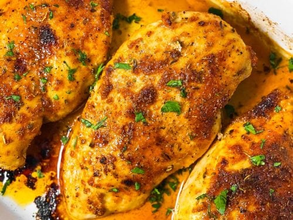

Baked Chicken

Description
Learn how to bake chicken that's tender, juicy, and perfect every time with this simple, 5-ingredient recipe for boneless, skinless chicken breasts. Adding just a bit of chicken broth to those beautiful pan drippings creates a tasty pan sauce that adds extra flavor at the table.
What else can I say? It's delicious, I know that.
Ingredients
- chicken breast
- olive oil
- coarse sea salt
- creole seasoning
- chicken broth
Steps
- Gather all ingredients.
- Preheat the oven to 400 degrees F (200 degrees C).
- Rub chicken breasts with olive oil and sprinkle both sides with salt and Creole seasoning. Place chicken in a broiler pan.
- Bake in the preheated oven for 10 minutes. Flip chicken and cook until no longer pink in the center and the juices run clear, about 15 minutes more. An instant-read thermometer inserted into the center should read at least 165 degrees F (74 degrees C).
- Remove chicken to a plate.
- Pour chicken broth into the pan and scrape any browned bits off the bottom with a flat-edged wooden spatula. Add more broth if needed to dislodge the browned bits, but not too much or it will be watery.
- To serve, drizzle the pan sauce over the chicken.